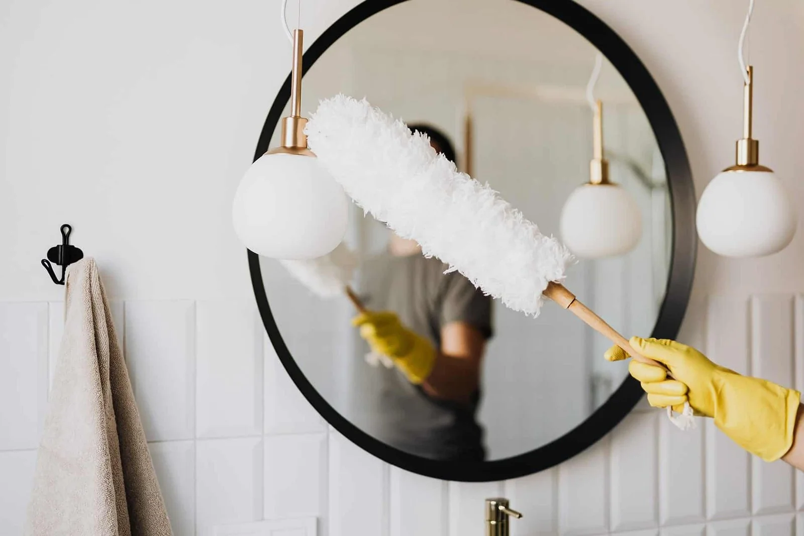

إذا كان فرن الغاز عندك صار يتأخر في التسخين أو ما عاد يعطي النتيجة المعتادة، فالأفضل ما تترك المشكلة لين تتعطل عليك الوجبة أو المناسبة. خدمة صيانة أفران الغاز بالرياض تبدأ بفهم العَرَض وفحص الجهاز بالطريقة الصحيحة، مو بتغيير قطع عشوائي. متى تفحص الفرن قبل عزيمة؟ إذا عندك عزيمة أو مناسبة، لا تنتظر لين آخر لحظة عشان تكتشف إن الفرن ما يسخن مثل أول.
جرّب الاستخدام المعتاد قبل الموعد بوقت كافٍ، وراقب ثبات اللهب واستجابة المفاتيح من الخارج فقط. إذا لاحظت خلل، احجز فحصًا ووضح للفني وش صار ومتى بدأ. خدمة محلية في الرياض لما تطلب صيانة أفران الغاز بالرياض، اذكر الحي بوضوح، ونوع الفرن وهل هو مدمج أو مستقل إذا كنت تعرف. وفي منطقة منطقة الرياض قد تختلف مواعيد الزيارة بحسب الموقع وتوفر الفني؛
لذلك أكّد الموعد وطريقة التواصل قبل الزيارة. وضّح إذا كان الجهاز في مكان ضيق أو يحتاج تحريكًا، ولا تحركه بنفسك إذا كان موصولًا بالغاز. علامات تحتاج انتباه من العلامات اللي تستحق الفحص: صعوبة الإشعال، انطفاء الشعلة، ضعف التسخين، تفاوت متكرر في النتيجة، مفاتيح ما تستجيب مثل المعتاد، أو ظهور سخام ورائحة غير مألوفة. هالعلامات ما تثبت سببًا واحدًا، لذلك لا تعتمد على التخمين ولا تغيّر أجزاء من نفسك.
وش تذكر وقت طلب الخدمة؟ وقت تتواصل بخصوص صيانة الفرن، اذكر المدينة والحي ونوع الجهاز وماركته إذا تعرفها، ووصف المشكلة ومتى بدأت. وضّح هل العطل مستمر أو يجي ويروح، وهل سبق إصلاح الفرن. لا تحتاج تشخّص السبب؛
المطلوب إنك تنقل اللي لاحظته بدقة. وش يقدر المستخدم يسوي بأمان؟ تقدر تقرأ دليل الاستخدام وتفحص من الخارج إذا كانت أدوات الطبخ أو الأغراض تسد المنطقة المحيطة. لا تفك الغطاء ولا تعبث بالصمامات أو الفوهات أو التوصيلات.
علامات تستحق الفحص
أي عمل يتطلب فتح الجهاز أو التعامل مع الغاز لازم يترك لفني مؤهل عنده الأدوات والخبرة. الفحص الفني قبل الإصلاح الفحص الجيد يبدأ بسماع وصف العميل، ثم التحقق من الأعراض وفق تعليمات الشركة وأدوات مناسبة. بعد ذلك يشرح الفني سبب الخلل المحتمل والإجراء المقترح والتكلفة. اطلب معرفة إذا كان السعر يشمل القطعة وأجرة التركيب واختبار التشغيل، ولا توافق على أعمال إضافية قبل توضيحها.
قطع الغيار والتوافق إذا احتاج الفرن قطعة بديلة، اسأل عن اسمها ومدى توافقها مع رقم الطراز. استخدام قطعة غير مناسبة ممكن يؤثر على الأداء والسلامة. من الأفضل توضيح تكلفة القطعة وأجرة العمل وأي ضمان متاح قبل البدء، والاحتفاظ بالفاتورة أو تقرير الزيارة للرجوع إليه. تنظيف المستخدم والصيانة الفنية تنظيف السطح الخارجي بعد ما يبرد الجهاز يختلف عن صيانة أجزاء الغاز.
استخدم فقط طريقة التنظيف المسموح بها في دليل الفرن، ولا ترش سوائل على المفاتيح أو فتحات الغاز أو أجزاء الإشعال. لا تستخدم إبرًا أو أسلاكًا لفتح الفوهات، لأن هذا قد يسبب ضررًا أو خطرًا. السلامة أولًا إذا شمّيت رائحة غاز، لا تستخدم الفرن ولا تشعل ولاعة ولا تلمس مفاتيح الكهرباء. إذا كان آمنًا، أغلق مصدر الغاز يدويًا، وافتح الأبواب والنوافذ دون تشغيل مراوح كهربائية، وغادر المكان واتصل بالطوارئ أو مزود الغاز من مكان آمن.
لا تحاول تحديد مكان التسرب بنفسك ولا تعاود الاستخدام قبل تصريح المختص. التكلفة وكيف تقارن العروض تختلف تكلفة الإصلاح حسب نوع الفرن وطبيعة الخلل والقطع المطلوبة ومكان الجهاز. اطلب عرضًا واضحًا يشرح الفحص وأجرة العمل والقطع وأي رسوم إضافية. المقارنة الصحيحة تكون بين خدمات تشمل نفس البنود، مو بين رقمين من غير تفاصيل.
كيف تحافظ على الفرن؟ التزم بتعليمات التشغيل، ولا تترك الفرن يعمل دون متابعة بحسب إرشادات الشركة، وأبعد المواد القابلة للاشتعال عن الجهاز. لا تستخدمه للتدفئة، ولا تسد فتحات التهوية، ولا تترك الأطفال يعبثون بالمفاتيح. إذا ظهر خلل، أوقف الاستخدام واطلب فحصًا بدل الاستمرار.
أسئلة شائعة هل كل ضعف تسخين يعني تغيير قطعة؟ لا، السبب يحتاج إلى فحص. هل أقدر أصلح الإشعال بنفسي؟ لا تفتح الجهاز ولا تتعامل مع الغاز؛
اطلب فنيًا مؤهلًا. هل السعر يحدد قبل الزيارة؟ ممكن إعطاء تقدير مبدئي، لكن التكلفة النهائية تعتمد على الفحص ونطاق العمل. هل تنظيف السطح يكفي؟
ما يمكن ملاحظته بأمان
لا يعوض الصيانة الفنية عند وجود خلل. الخلاصة والتواصل إذا احتجت صيانة أفران الغاز بالرياض، لا تنتظر حتى يتفاقم الخلل. جهّز اسم الماركة ورقم الطراز إن توفر، واكتب وصفًا مختصرًا للمشكلة، ثم اطلب توضيح نتيجة الفحص والتكلفة قبل الموافقة على الإصلاح. تذكّر أن سلامة الغاز أهم من محاولة تشغيل الفرن بأي طريقة.
كلمات البحث اللي ممكن يستخدمها العميل في الرياض تشمل: فني أفران غاز الرياض، تصليح فرن غاز، إصلاح أفران الغاز، الفرن ما يولع، ضعف حرارة الفرن، صيانة بوتاجاز وفرن، وفني أجهزة منزلية. استخدام هالكلمات في الصفحة لازم يكون طبيعي ويخدم القارئ، مو مجرد تكرار متتابع. من المفيد توضيح إن كان الفرن مدمجًا داخل المطبخ أو جهازًا مستقلًا، لأن الوصول للجهاز قد يختلف. لا تسحب الجهاز ولا تفصل الوصلات بنفسك؛
اشرح الوضع عند الحجز وخلي الفني يحدد طريقة العمل المناسبة. بعد الإصلاح، احتفظ بتفاصيل ما تم عمله وتاريخ الزيارة، واسأل عن تعليمات الاستخدام أو العناية التي يوصي بها الفني. إذا رجعت العلامة نفسها، تواصل مع مقدم الخدمة واشرح متى عادت وما الذي تغير، بدل محاولة تعديل الجهاز من الداخل. لا تذكر ضمانًا أو سرعة وصول أو اعتمادًا فنيًا إلا إذا كان ذلك صحيحًا ويمكن إثباته.
العميل يحتاج يعرف وش يشمل الموعد: هل هو فحص فقط أم إصلاح بعد موافقته؟ هل القطع تحسب بشكل منفصل؟ وهل توجد رسوم انتقال؟ الإجابة الواضحة تقلل الالتباس وتساعد العميل يقارن بين الخيارات بطريقة عادلة.
هذا دليل توعوي عام ولا يؤكد توافر الخدمة أو تغطيتها في المدينة. اتبع تعليمات السلامة ودليل الشركة المصنّعة، واستفسر عن النطاق قبل الحجز.